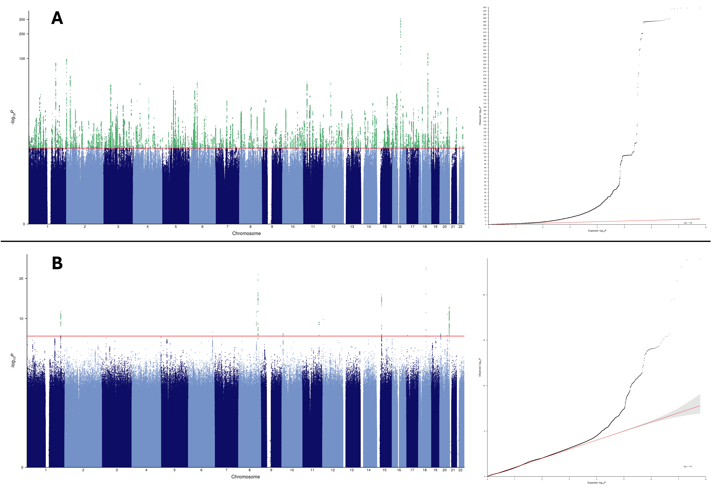
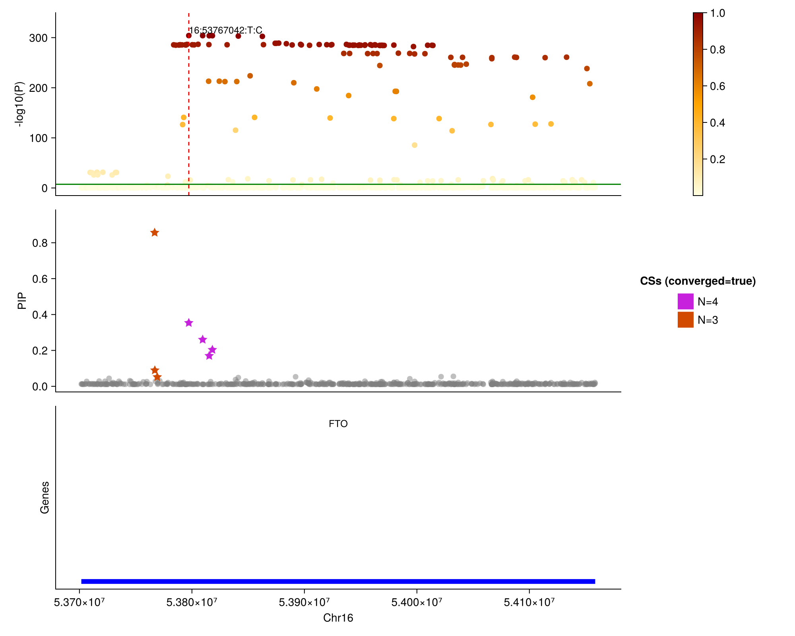

Running WDL-GWAS on the UK Biobank RAP
In this example, we provide a tutorial to reproduce the two GWAS studies performed in the WDL-GWAS paper: BMI and colorectal cancer. This involves a bit more than running the workflow since we need to prepare the data for it. Also, since you will be interacting with the RAP and real world data, this involves costs and some time investment (however most of the time is just waiting for jobs to finish so you can do something else).
| Step | Total Time | Active Time | Expected Price |
|---|---|---|---|
| Covariates Preparation | 30 minutes | 20 minutes | £0 |
| Genotypes Preparation | 4 hours | 10 minutes | £20 |
| GWAS | 1.5 days | 10 minutes | £130 |
| Total | 2 days | 40 minutes | £150 |
Body mass index has many significant loci across the genome, making this run quite expensive. This is because each of them will be fine-mapped. For a cheaper run, restrict the following analysis to colorectal cancer or any trait of interest to you which should cost about £40.
Creating the Covariates File
First we need to extract the relevant fields from the UK Biobank's main dataset, we can do this using dx extract_dataset:
dx extract_dataset DATASET_RECORD_ID --fields-file docs/src/assets/paper_fields.txt --output raw_covariates.csvSometimes the above fails randomly with 'Invalid JSON received from server', 200. Just try again.
However, the extracted dataset cannot be directly used with the WDL-GWAS workflow, we first need to define the covariates and phenotypes from the extracted fields. The following Julia code snippet creates such a covariate file. If you don't want to download Julia and reproduce the code, here is what it does:
- It makes sure the
FIDandIIDare defined and correspond to theeidfield. - It defines the current participants' age.
- It extracts the participants self reported ethnic background
- It defines colorectal cancer has having any of the C18, C19 or C20 ICD10 code.
- It extracts the BMI column
If you want to reproduce this example, you will need to download Julia for which I recommend using juliaup. Then, you can run the below code interactively using the REPL by typing julia.
using Pkg; Pkg.activate("docs"); Pkg.instantiate()
using CSV
using DataFrames
using Dates
function parse_ICD10_col!(parsed_col, col, codes)
for index in eachindex(parsed_col)
val = col[index]
val === missing && continue
parsed_col[index] = parsed_col[index] | any(code -> startswith(val, code), codes)
end
return parsed_col
end
function parse_cancer(cols...; codes)
cancer_col = zeros(Int, length(first(cols)))
for col in cols
parse_ICD10_col!(cancer_col, col, codes)
end
return cancer_col
end
superethnicity(x::Missing) = x
"""
This will group `Do not know` and `Prefer not to answer` together
"""
superethnicity(x) = first(string(x))
cancer_registry_cols = [
"participant.p40006_i0",
"participant.p40006_i1",
"participant.p40006_i2",
"participant.p40006_i3",
"participant.p40006_i4",
"participant.p40006_i5",
"participant.p40006_i6",
"participant.p40006_i7",
"participant.p40006_i8",
"participant.p40006_i9",
"participant.p40006_i10",
"participant.p40006_i11",
"participant.p40006_i12",
"participant.p40006_i13",
"participant.p40006_i14",
"participant.p40006_i15",
"participant.p40006_i16",
"participant.p40006_i17",
"participant.p40006_i18",
"participant.p40006_i19",
"participant.p40006_i20",
"participant.p40006_i21"
]
raw_covariates = CSV.read("raw_covariates.csv", DataFrame)
covariates = select(raw_covariates,
"participant.eid" => "FID",
"participant.eid" => "IID",
"participant.p22001" => "SEX",
"participant.p34" => (x -> Int(Dates.year(now())) .- x) => "AGE",
"participant.p21000_i0" => (x -> superethnicity.(x)) => "SUPER_ETHNICITY",
"participant.p23104_i0" => "BMI",
cancer_registry_cols => ((cols...) -> parse_cancer(cols...; codes=["C18", "C19", "C20"])) => "COLORECTAL_CANCER"
)
CSV.write("covariates.csv", covariates)Finally we can upload the dataset to the UK Biobank RAP using dx upload:
dx upload --path /wdl_gwas_covariates.csv covariates.csvExtracting Imputed and Typed Genotypes
WDL-GWAS requires both imputed and typed genotypes. To get those we will (i) use the TOPMed imputed genotypes which should be provided in your /Bulk/Imputation/ folder and (ii) add some quality control filters. And of course, to make this reproducible, we will use another WDL workflow.
The workflow can be found in workflows/extract_genotypes.wdl, feel free to adapt it to your own needs.
Then you can run it using the following DNA Nexus commands. First we compile it using dxCompiler:
java -jar $DX_COMPILER_PATH compile workflows/extract_genotypes.wdl \
-f -project $RAP_PROJECT_ID \
-reorg \
-folder /workflows/extract_genotypes \
-inputs docs/src/assets/extract-ukb-genotypes.inputs.jsonwhere:
DX_COMPILER_PATHis set as per the installation's instruction.RAP_PROJECT_IDis your UK Biobank RAP project ID.docs/src/assets/extract-ukb-genotypes.inputs.jsonis the file providing the workflow's inputs. In particular it points to the various BGEN files from TOPMed and VCF sites files.
The compiler might output some warnings like missing input for non-optional parameter but you can ignore these.
The command will do a few things:
- It will compile and upload the workflow to the UK Biobank RAP
- It will create a corresponding
inputs.dx.jsonfile locally which can be used to run the workflow
File paths need to point to their location in your UK Biobank RAP project. There are two main ways you can fill those in - via object identifiers: dx://RAP_PROJECT_ID:FILE_ID or via a file path: dx://RAP_PROJECT_ID:/path/to/file.
Then we can run the workflow with:
dx run -y \
-f docs/src/assets/extract-ukb-genotypes.inputs.dx.json \
--priority high \
--destination /ukb_extracted_genotypes/ \
/workflows/extract_genotypes/extract_ukb_genotypesThis workflow runs in approximately 5 hours and will cost about £20. The resulting files will be available in the /ukb_extracted_genotypes folder.
Running WDL-GWAS
Similarly to the previous step, we need to provide WDL-GWAS' inputs via a JSON file. In this example, the file paths will point to the freshly extracted imputed and typed genotypes. We also need to provide some phenotypes of interest, here BMI and COLORECTAL_CANCER and for illustration, we will restrict the analysis to a self-reported White ethnic background.
The full JSON input file is located in docs/src/assets/paper.inputs.json for which an extract is presented here:
{
"gwas.covariates_file": "dx://project-J0pkqyQJpYQ133JG1p2J1qzv:/wdl_gwas_covariates.csv",
"gwas.genotypes": {
"chr": "all",
"bed": "dx://project-J0pkqyQJpYQ133JG1p2J1qzv:/ukb_extracted_genotypes/typed.bed",
"bim": "dx://project-J0pkqyQJpYQ133JG1p2J1qzv:/ukb_extracted_genotypes/typed.bim",
"fam": "dx://project-J0pkqyQJpYQ133JG1p2J1qzv:/ukb_extracted_genotypes/typed.fam"
},
"gwas.imputed_genotypes": [
{
"chr": "1",
"pgen": "dx://project-J0pkqyQJpYQ133JG1p2J1qzv:/ukb_extracted_genotypes/ukb21007_c1_b0_v1.imputed.pgen",
"psam": "dx://project-J0pkqyQJpYQ133JG1p2J1qzv:/ukb_extracted_genotypes/ukb21007_c1_b0_v1.imputed.psam",
"pvar": "dx://project-J0pkqyQJpYQ133JG1p2J1qzv:/ukb_extracted_genotypes/ukb21007_c1_b0_v1.imputed.pvar"
},
{
"chr": "2",
"pgen": "dx://project-J0pkqyQJpYQ133JG1p2J1qzv:/ukb_extracted_genotypes/ukb21007_c2_b0_v1.imputed.pgen",
"psam": "dx://project-J0pkqyQJpYQ133JG1p2J1qzv:/ukb_extracted_genotypes/ukb21007_c2_b0_v1.imputed.psam",
"pvar": "dx://project-J0pkqyQJpYQ133JG1p2J1qzv:/ukb_extracted_genotypes/ukb21007_c2_b0_v1.imputed.pvar"
},
...
],
"gwas.covariates": ["AGE", "SEX", "AGE_x_AGE", "AGE_x_SEX"],
"gwas.phenotypes": ["COLORECTAL_CANCER", "BMI"],
"gwas.filterby": ["SUPER_ETHNICITY=1"],
...
}Then, as in the previous step, we need to compile WDL-GWAS and upload it to the RAP, this can be done with dxCompiler:
java -jar $DX_COMPILER_PATH compile workflows/gwas.wdl \
-f -project $RAP_PROJECT_ID \
-reorg \
-folder /workflows/gwas \
-inputs docs/src/assets/paper.inputs.jsonThen, to run WDL-GWAS:
dx run -y \
-f docs/src/assets/paper.inputs.dx.json \
--priority high \
--destination /wdl_gwas_paper_outputs/ \
/workflows/gwas/gwasOf course you can change the destination /wdl_gwas_paper_outputs to your need. You should be able to visualize the run execution on your UK Biobank RAP account under the MONITOR tab.
Outputs
The workflow outputs will be stored in the /wdl_gwas_paper_outputs/ folder.
- In particular, the asscociated summary statistics can be found in
all.TRAIT.gwas.tsvwhereTRAITis eitherBMIorCOLORECTAL_CANCER. Theallprefix indicates that no groups were provided. Similarly, Manhattan and QQ plots are namedall.TRAIT.manhattan.pngandall.TRAIT.qq.pngand displayed below as an illustration.

- Fine-mapping results are stored in files named
all.TRAIT.finemapping.tsvwithTRAITbeing eitherBMIorCOLORECTAL_CANCERas before. Furthermore, a locus plot will be created for each fine-mapped locus. These plots are namedall.TRAIT.LEAD_VARIANT_ID.locuszoom.pngwhere theLEAD_VARIANT_IDtags the locus. For instance, the locus tagged by the classic FTO variant rs1421085 is found inall.BMI.16_53767042_T_C.locuszoom.png. It has been assigned to a credible set with posterior inclusion probability 0.35, the highest in the set.
